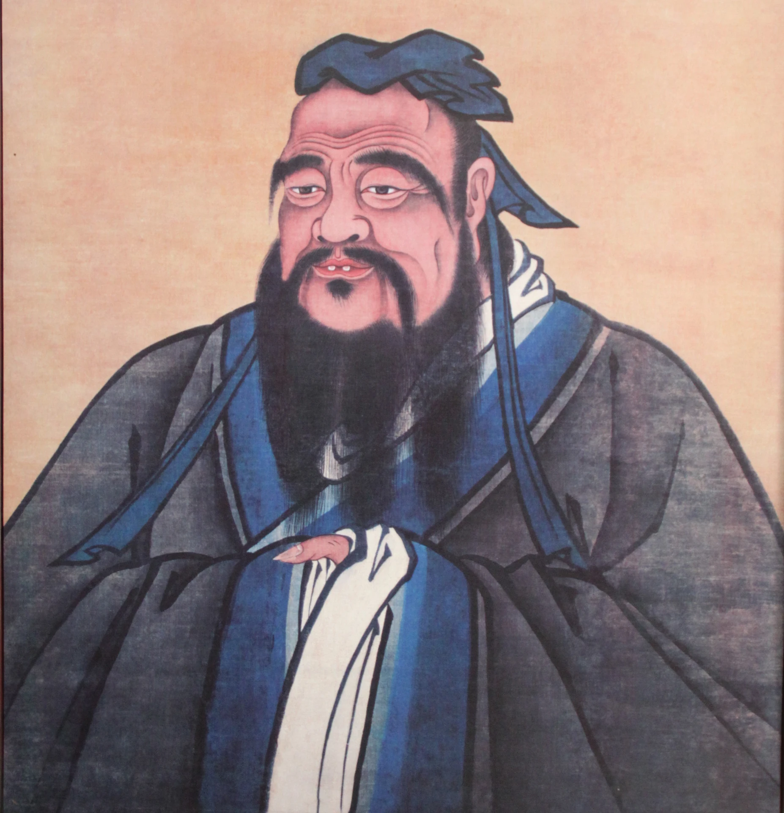
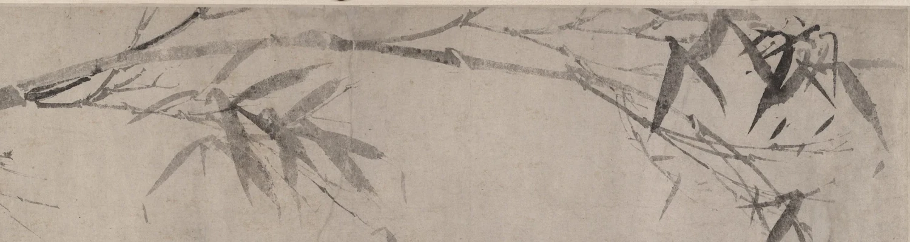

面對順逆，守住本心
沒有仁德的人，不能長久安處窮困，
也不能長久安享快樂。
有仁德的人，實踐仁德而心安；
有智慧的人，明白仁德的益處而行仁。
《論語・里仁》選讀
一個人，如何守住內心的準則？

一・朗讀原文｜第一、二則
子曰：「不仁者，不可以久處約，
不可以長處樂。仁者安仁，知者利仁。」
子曰：「惟仁者，能好人，能惡人。」
一・朗讀原文｜第三則
子曰：「富與貴，是人之所欲也；不以其道得之，不處也。貧與賤，是人之所惡也；不以其道得之，不去也。君子去仁，惡乎成名？君子無終食之間違仁，造次必於是，顛沛必於是。」
二・翻譯第一、二則
沒有仁德的人，不能長久安處窮困，
也不能長久安享快樂。
有仁德的人，實踐仁德而心安；
有智慧的人，明白仁德的益處而行仁。
只有有仁德的人，
才能公正地喜愛人、厭惡人。
約：窮困 知：通「智」
好／惡：喜愛／厭惡
二・翻譯第三則
富裕尊貴，人人嚮往；取得的方法不正當，便不接受。
貧窮卑賤，人人厭惡；若不能循正道擺脫，也不苟且逃避。
君子若捨棄仁德，
又怎能稱得上君子？
即使一頓飯的短時間，也不違背仁德；
倉卒匆忙、困頓挫折時，同樣如此。
三・解讀思想與層次
安仁：出於內心認同。
利仁：明白仁德的益處。
不被私心左右，
才有公正的好惡。
富貴不苟取，
忙亂與逆境也不違仁。
三・解讀第一則｜行仁的動機
仁者安仁
把仁德視為自然的生活準則，
行仁本身，便能使自己心安。
知者利仁
理解仁德對自己與他人的益處，
因而選擇依循仁德。
「利仁」指認識仁德的益處，不能理解為利用別人牟利。
三・解讀第二則｜待人的原則
「惟仁者，能好人，能惡人。」
因品行而肯定他人，
不因親疏而偏愛。
對不當行為作出判斷，
不讓私怨代替是非。
仁者的好惡，以是非為依據；仁愛也需要界線。
三・解讀第三則｜欲望與原則
可以追求，先問方法是否正當。
不以其道得之，不處也。
可以求變，也不能違義脫困。
不以其道得之，不去也。
孔子承認人的欲望，再指出君子取捨的界線：是否合乎正道。
三・解讀第三則｜寫法與效果
「富與貴」／「貧與賤」
把所欲與所惡並列，說明順逆皆須守道。
「君子去仁，惡乎成名？」
捨棄仁德，便不配稱為君子，語氣更肯定。
「造次必於是，顛沛必於是」
兩次「必於是」，強調匆忙與困頓時仍須行仁。
三・解讀第三則｜時間與處境
一頓飯的短時間
短暫，也不違仁。
倉卒匆忙的時候
忙亂，也不違仁。
困頓挫折的時候
受挫，也不違仁。
由短暫的日常，到忙亂與逆境，都要保持一致。
三・解讀粵音與字義
「知」通「智」；「好」作動詞；「惡」須分辨厭惡、怎麼與兇惡。數字為粵拼聲調。
三・解讀粵音｜本篇的特定讀法
先看字義→再看語境→決定讀音
四・生活應用把仁，放進選擇裡
想取得好成績，也拒絕作弊。
不因交情護短，不跟風攻擊別人。
落敗或受壓時，仍尊重他人、守住底線。
四・生活應用情境｜分組報告
明天就要匯報，有人還未交稿，大家又急又不滿。
問清困難與進度，
不急於責罵或貼標籤。
按能力補位、訂好期限，
如實交代各人的貢獻。
可以簡化內容，
不能抄襲或冒領成果。
五・總結以仁為本，以行立身
安定自己・公正待人・堅守正道

第 1 頁，共 16 頁